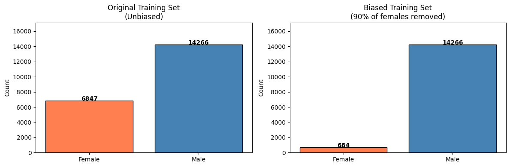
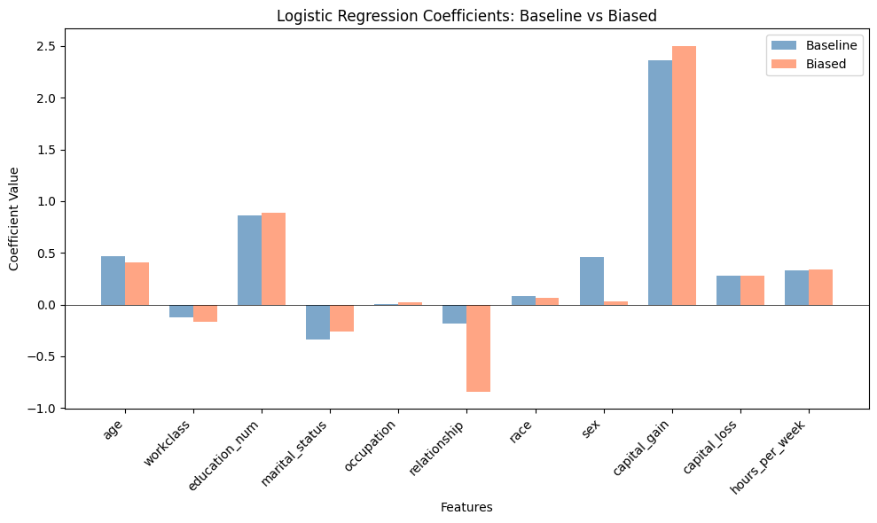
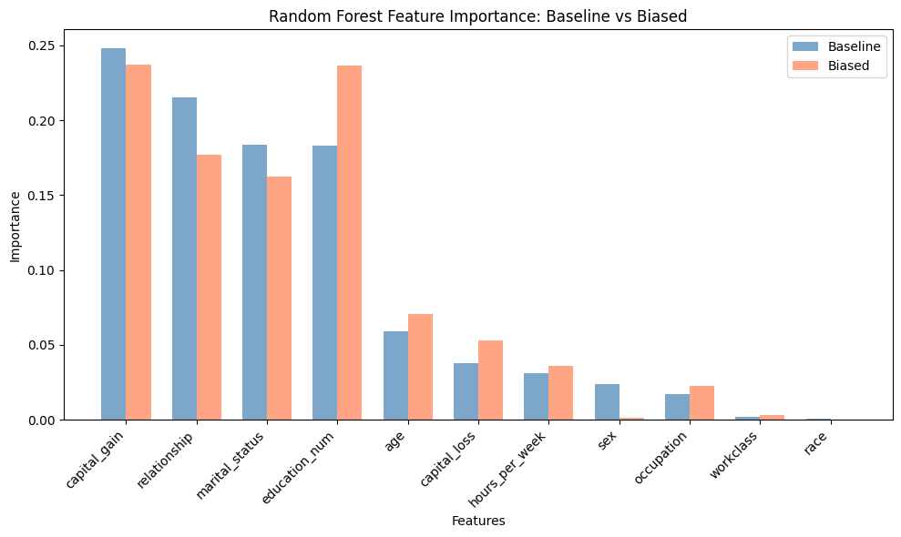

11. Introducing and Training on Biased Data#
Now we’ll simulate what happens in real-world data collection when certain groups are underrepresented.
Setup#
import pandas as pd
import numpy as np
import matplotlib.pyplot as plt
import seaborn as sns
from sklearn.model_selection import train_test_split
from sklearn.linear_model import LogisticRegression
from sklearn.ensemble import RandomForestClassifier
from sklearn.metrics import accuracy_score, classification_report
from sklearn.preprocessing import StandardScaler, LabelEncoder
import warnings
warnings.filterwarnings('ignore')
np.random.seed(42)
# Load and prepare data
url = "https://archive.ics.uci.edu/ml/machine-learning-databases/adult/adult.data"
column_names = ['age', 'workclass', 'fnlwgt', 'education', 'education_num', 'marital_status',
'occupation', 'relationship', 'race', 'sex', 'capital_gain', 'capital_loss',
'hours_per_week', 'native_country', 'income']
adult_data = pd.read_csv(url, names=column_names, skipinitialspace=True, na_values='?')
adult_data = adult_data.dropna()
adult_data['target'] = (adult_data['income'] == '>50K').astype(int)
adult_data['sex'] = (adult_data['sex'] == 'Male').astype(int)
categorical_cols = ['workclass', 'marital_status', 'occupation', 'relationship', 'race']
for col in categorical_cols:
le = LabelEncoder()
adult_data[col] = le.fit_transform(adult_data[col])
feature_cols = ['age', 'workclass', 'education_num', 'marital_status',
'occupation', 'relationship', 'race', 'sex',
'capital_gain', 'capital_loss', 'hours_per_week']
X = adult_data[feature_cols]
y = adult_data['target']
X_train, X_test, y_train, y_test = train_test_split(
X, y, test_size=0.3, random_state=42, stratify=adult_data['sex']
)
print("Data loaded successfully!")
Data loaded successfully!
Creating a Biased Training Set#
We’ll create a biased training set by undersampling female individuals. This mirrors real-world scenarios where:
Workforce datasets have historically been dominated by male employees
Hiring and promotion data may underrepresent women in certain industries
Salary surveys may have lower response rates from particular demographics
def create_biased_sample(X, y, sex_col='sex', female_ratio=0.1):
"""
Create a biased training sample by undersampling female individuals.
Parameters:
- female_ratio: proportion of female individuals to keep (0.1 = keep only 10%)
"""
# Separate by sex
female_mask = X[sex_col] == 0
male_mask = X[sex_col] == 1
X_female = X[female_mask]
y_female = y[female_mask]
X_male = X[male_mask]
y_male = y[male_mask]
# Undersample females
n_female_keep = max(1, int(len(X_female) * female_ratio))
female_indices = np.random.choice(len(X_female), n_female_keep, replace=False)
X_female_sampled = X_female.iloc[female_indices]
y_female_sampled = y_female.iloc[female_indices]
# Combine
X_biased = pd.concat([X_female_sampled, X_male])
y_biased = pd.concat([y_female_sampled, y_male])
return X_biased, y_biased
# Create biased training set (keep only 10% of females)
X_train_biased, y_train_biased = create_biased_sample(X_train, y_train, female_ratio=0.1)
print("Biased Training Set Statistics")
print("=" * 50)
print(f"Original training set size: {len(X_train)}")
print(f"Biased training set size: {len(X_train_biased)}")
print(f"\nOriginal sex distribution:")
print(f" Female: {(X_train['sex'] == 0).sum()} ({100*(X_train['sex'] == 0).mean():.1f}%)")
print(f" Male: {(X_train['sex'] == 1).sum()} ({100*(X_train['sex'] == 1).mean():.1f}%)")
print(f"\nBiased sex distribution:")
print(f" Female: {(X_train_biased['sex'] == 0).sum()} ({100*(X_train_biased['sex'] == 0).mean():.1f}%)")
print(f" Male: {(X_train_biased['sex'] == 1).sum()} ({100*(X_train_biased['sex'] == 1).mean():.1f}%)")
Biased Training Set Statistics
==================================================
Original training set size: 21113
Biased training set size: 14950
Original sex distribution:
Female: 6847 (32.4%)
Male: 14266 (67.6%)
Biased sex distribution:
Female: 684 (4.6%)
Male: 14266 (95.4%)
Visualizing the Demographic Shift#
fig, axes = plt.subplots(1, 2, figsize=(12, 4))
# Original training distribution
original_counts = X_train['sex'].value_counts().sort_index()
axes[0].bar(['Female', 'Male'], [original_counts.get(0, 0), original_counts.get(1, 0)],
color=['coral', 'steelblue'], edgecolor='black')
axes[0].set_ylabel('Count')
axes[0].set_title('Original Training Set\n(Unbiased)')
axes[0].set_ylim(0, max(original_counts) * 1.2)
for i, v in enumerate([original_counts.get(0, 0), original_counts.get(1, 0)]):
axes[0].text(i, v + 2, str(v), ha='center', fontweight='bold')
# Biased training distribution
biased_counts = X_train_biased['sex'].value_counts().sort_index()
axes[1].bar(['Female', 'Male'], [biased_counts.get(0, 0), biased_counts.get(1, 0)],
color=['coral', 'steelblue'], edgecolor='black')
axes[1].set_ylabel('Count')
axes[1].set_title('Biased Training Set\n(90% of females removed)')
axes[1].set_ylim(0, max(original_counts) * 1.2)
for i, v in enumerate([biased_counts.get(0, 0), biased_counts.get(1, 0)]):
axes[1].text(i, v + 2, str(v), ha='center', fontweight='bold')
plt.tight_layout()
plt.show()

Training Models on Biased Data#
Now let’s train the same models on our biased training data:
# Scale data
scaler = StandardScaler()
scaler.fit(X_train_biased)
X_train_biased_scaled = scaler.transform(X_train_biased)
X_test_scaled = scaler.transform(X_test)
# Also train baseline models for comparison
scaler_baseline = StandardScaler()
X_train_scaled = scaler_baseline.fit_transform(X_train)
X_test_scaled_baseline = scaler_baseline.transform(X_test)
# Baseline models
lr_baseline = LogisticRegression(random_state=42, max_iter=1000)
lr_baseline.fit(X_train_scaled, y_train)
y_pred_lr_baseline = lr_baseline.predict(X_test_scaled_baseline)
rf_baseline = RandomForestClassifier(n_estimators=100, random_state=42, max_depth=5)
rf_baseline.fit(X_train_scaled, y_train)
y_pred_rf_baseline = rf_baseline.predict(X_test_scaled_baseline)
# Biased models
lr_biased = LogisticRegression(random_state=42, max_iter=1000)
lr_biased.fit(X_train_biased_scaled, y_train_biased)
y_pred_lr_biased = lr_biased.predict(X_test_scaled)
rf_biased = RandomForestClassifier(n_estimators=100, random_state=42, max_depth=5)
rf_biased.fit(X_train_biased_scaled, y_train_biased)
y_pred_rf_biased = rf_biased.predict(X_test_scaled)
print("Models trained on biased data!")
Models trained on biased data!
Comparing Model Coefficients#
Let’s see how the sampling bias affected what the Logistic Regression model learned:
# Compare Logistic Regression coefficients
coef_comparison = pd.DataFrame({
'Feature': feature_cols,
'Baseline Coefficients': lr_baseline.coef_[0],
'Biased Coefficients': lr_biased.coef_[0]
})
coef_comparison['Difference'] = coef_comparison['Biased Coefficients'] - coef_comparison['Baseline Coefficients']
coef_comparison = coef_comparison.sort_values('Difference', key=abs, ascending=False)
print("Logistic Regression Coefficient Comparison")
print("=" * 60)
print(coef_comparison.to_string(index=False))
Logistic Regression Coefficient Comparison
============================================================
Feature Baseline Coefficients Biased Coefficients Difference
relationship -0.179954 -0.840618 -0.660664
sex 0.461154 0.032060 -0.429093
capital_gain 2.361543 2.500403 0.138860
marital_status -0.340979 -0.261430 0.079549
age 0.471447 0.405315 -0.066132
workclass -0.125846 -0.163021 -0.037175
education_num 0.861804 0.884838 0.023034
race 0.086131 0.066040 -0.020091
occupation 0.008365 0.022833 0.014467
hours_per_week 0.333422 0.340720 0.007299
capital_loss 0.276283 0.280818 0.004535
# Visualize coefficient changes
fig, ax = plt.subplots(figsize=(10, 6))
x = range(len(feature_cols))
width = 0.35
ax.bar([i - width/2 for i in x], lr_baseline.coef_[0], width, label='Baseline', color='steelblue', alpha=0.7)
ax.bar([i + width/2 for i in x], lr_biased.coef_[0], width, label='Biased', color='coral', alpha=0.7)
ax.set_xlabel('Features')
ax.set_ylabel('Coefficient Value')
ax.set_title('Logistic Regression Coefficients: Baseline vs Biased')
ax.set_xticks(x)
ax.set_xticklabels(feature_cols, rotation=45, ha='right')
ax.legend()
ax.axhline(y=0, color='black', linestyle='-', linewidth=0.5)
plt.tight_layout()
plt.show()

Comparing Feature Importance (Random Forest)#
# Compare Random Forest feature importances
importance_comparison = pd.DataFrame({
'Feature': feature_cols,
'Baseline Importance': rf_baseline.feature_importances_,
'Biased Importance': rf_biased.feature_importances_
})
importance_comparison['Difference'] = importance_comparison['Biased Importance'] - importance_comparison['Baseline Importance']
importance_comparison = importance_comparison.sort_values('Baseline Importance', ascending=False)
print("Random Forest Feature Importance Comparison")
print("=" * 60)
print(importance_comparison.to_string(index=False))
Random Forest Feature Importance Comparison
============================================================
Feature Baseline Importance Biased Importance Difference
capital_gain 0.248289 0.237157 -0.011133
relationship 0.215051 0.177043 -0.038009
marital_status 0.183948 0.162443 -0.021505
education_num 0.182811 0.236490 0.053678
age 0.058795 0.070576 0.011781
capital_loss 0.037521 0.052947 0.015426
hours_per_week 0.030889 0.036252 0.005363
sex 0.023587 0.001220 -0.022367
occupation 0.016875 0.022616 0.005741
workclass 0.001718 0.002853 0.001135
race 0.000514 0.000403 -0.000111
# Visualize importance changes
fig, ax = plt.subplots(figsize=(10, 6))
x = range(len(feature_cols))
width = 0.35
sorted_features = importance_comparison['Feature'].tolist()
ax.bar([i - width/2 for i in x], importance_comparison['Baseline Importance'], width,
label='Baseline', color='steelblue', alpha=0.7)
ax.bar([i + width/2 for i in x], importance_comparison['Biased Importance'], width,
label='Biased', color='coral', alpha=0.7)
ax.set_xlabel('Features')
ax.set_ylabel('Importance')
ax.set_title('Random Forest Feature Importance: Baseline vs Biased')
ax.set_xticks(x)
ax.set_xticklabels(sorted_features, rotation=45, ha='right')
ax.legend()
plt.tight_layout()
plt.show()

Key Observations#
Notice how the biased training data affects:
Coefficient values - The model learns different relationships between features and outcomes
Feature importance - The relative importance of features shifts when trained on biased data
The sex coefficient - Pay attention to how the coefficient for ‘sex’ changes between models
In the next section, we’ll evaluate how these changes impact model performance across demographic groups.